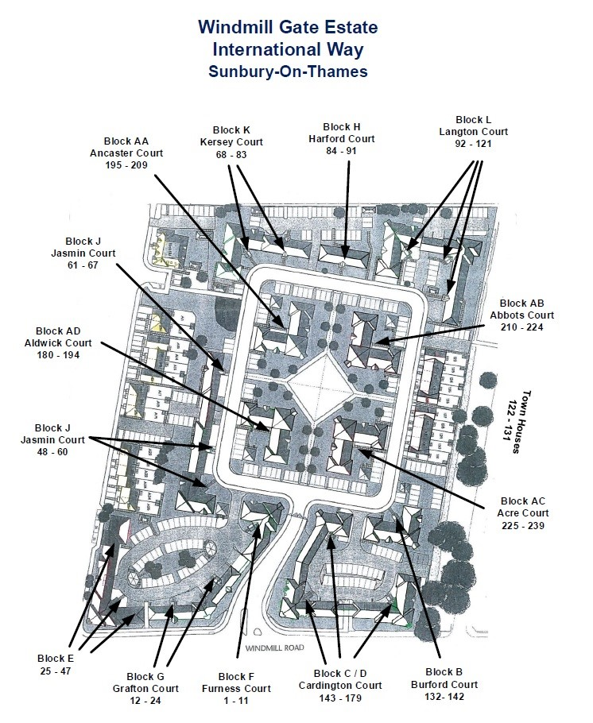

History
The original site of the Windmill Trading Estate, located over 3.2 hectares was developed to 264 residential properties on Windmill Gate and Lincoln Way.
The Windmill Gate Estate comprises of 239 residential properties with its associated parking spaces/garages/car ports/substation and open space.
Within the open space is a play area for children aged eight years and younger.
The Communal parts of the Estate
The Estate manager, who looks after the grounds, roads, street lights and children play area is currently managed by Prime (Tel: 020 3700 8733, email: info@primepm.co.uk
The Blocks
A large number of the block have already acquired the Right To Manage (RTM) 😊
- Blocks AA, AB, AC, AD, C/D, K and B are managed by Prime (Tel: 020 3700 8733, email: info@primepm.co.uk
- Block F is managed by 2ManageProperty, (Tel: 01932 705 917, email: info@2ManageProperty.co.uk
- Block H is managed by the RTM company itself 😊, email: TheRTMCompany@gmail.com
- A small number of blocks (L, G and part of J) that used to managed by HML, are now managed by Prime.
- Some properties in Block E (38-47, 24-37) and J (61-67) are managed by A2Dominion: 113 Uxbridge Road, Ealing, London W5 5TL. Tel: 0800 432 0077, customer.services@a2dominion.co.uk.
- The houses are managed by the owners.
For the list of the Directors, see the Download section.
NOTE: All RMC & RTM directors are “volunteering” directors, offering their time & services for the benefit of the estate/block, without any renumerations.
Parking & Bins
All residents and visitors to the development are bound to observe and comply with the Estate Regulations
and the Terms and Conditions outlined in the Registered Lease Agreement. Please note that the Estate Regulations may be varied at any time by the Manager in the Lease for the preservation of the amenities of the Development. Needless to say, it is very important that we must adhere to the Terms and Conditions.
- The vehicle speed limit is 5mph
- Children must not “ride” the gates as they open and close
- Music and motor bikes noise to be kept to minimum
- Communal front doors must NOT be left on the latch and Emergency exit doors must remain closed at all times.
- The storage & charging of electric bikes and scooters is strictly prohibited.
Parking
- Many residents have allocated parking, as marked clearly on a map within their lease. This must be respected by all visitors and residents alike.
- Visitor parking space is clearly marked with a “V”
- Do not use any parking space for any purpose other than for parking a private motor vehicle. Commercial vehicles weighing more than 3 tonnes are not permitted on site other than for the purpose of deliveries.
- Do not block the footpaths with your vehicle at any time
- Do not allow or cause to be allowed the deterioration of any vehicle on the development to an unreasonable condition. Do not abandon any vehicle whatsoever on any part of the Development. Prime will exercise the right to arrange for the removal of such neglected or abandoned vehicle and look to recover all associated cost from the registered owner.
- A parking company is instructed by management who attend periodically and WILL issue tickets to those not following the rules
- No parking on the double yellow lines anywhere on the site.
The Premises
- The lease does not permit residents to display window boxes, any washing, aerials, satellite or other communication equipment outside on your balcony, patios or out of the windows.
- Residents and visitors are not permitted to use the premises or the development for any illegal, immoral or improper or business purpose, or any act or thing which shall be or may become a nuisance, damage, annoyance or inconvenience to the Lessor, Manager or to the transferees or occupiers of the property
- No dog, bird, or animal shall be kept without the prior conditional consent of the Manager, such consent being at the absolute discretion of the Manager.
The Communal Area
- Cycling and ball games are not permitted in the central area of the estate
- Dogs must be kept on a leash at all times. Dog owners (or any person in charge of a dog) must clean up its mess
- Private parties, BBQs and football games are not permitted in the Communal areas. In some cases (for example public occasions, estate functions) parties will be allowed, with prior written permission from the Manager
- No noise should be heard outside the demised premises between the hours of 11 pm and 9 am
- Furniture and personal items should not be stored in the communal areas for any length of time for any reason whatsoever.
Waste Bins & Recycling
For bin collection dates, follow the link
https://www.spelthorne.gov.uk/article/16350/Rubbish-and-recycling
Recycling
- The light green bin is for recycling
- No plastic bags.
- Recyclables must be placed in your recycling bin loose. The council offers free, re-useable recycling bags to transport your loose recyclables from indoors to your recycling bin. They have a handle underneath allowing you to easily empty the contents into your recycling bin. Printed on the side of the bag is a list of what you can and can't recycle.
- Large pieces of dry cardboard, that don’t fit the bin, can be left at the side of the bin on collection days
- Recycling is collected every fortnight on Thursdays.
- If the bin is contaminated a sticker will be placed on the lid of the bin.
Where to get your free recycling bag
You can collect a recycling bag (along with a range of informative recycling leaflets) from any of the
locations below:
- Benwell Centre, Sunbury
- Council Offices (Knowle Green), Staines-upon-Thames
- Fordbridge Centre, Ashford
- Greeno Centre, Shepperton
- Staines Community Centre, Staines-upon-Thames
- White House Depot, Ashford
General Waste
- The dark green bin is for waste
- Ensure the bin lid closes or it will not be emptied.
- DO NOT leave extra bags of rubbish at the side of the bin, they probably won’t be taken.
- Rubbish is collected every fortnight on Thursdays.
Food Waste
- Food waste is collected weekly as part of the '3 services in 1' collection (food waste, textiles and small electricals).
- Food waste caddies are available free from Spelthorne Council.
- There are two caddies- a small grey one for the kitchen and a larger dark green one to put outside on collection day.
- Re-use plastic bags from bread, fruit, potatoes and vegetables in your grey caddy. Tie them before you put them in your external food waste bin. The Council will not take food waste if it is loose
- Food waste is collected every week on Thursdays.
Garden Waste
- Brown garden waste bins are available on application to Spelthorne Council.
- There is an annual fee for this service.
- Cost of the service
- There is an annual charge of £56 for collections between April 2019 - March 2020 and a one off payment of £25 for the garden waste bin. (You can apply online).
- Full details are on Spelthorne.gov.uk
- Garden waste is collected fortnightly.
- On collection day ALL BINS being emptied that day need to be curb side by 6am.
There is also a small electricals and textiles collection on Thursdays ‘3 services in 1’. Small electrical items need to be:
- In clear plastic or carrier bags (ideally labelled to show they contain electricals)
- Kerbside by 6am (next to your food waste bin)
- Able to fit into a standard sized carrier bag
- Without batteries and bulbs (leave plugs or cables attached)
Clothes and textiles need to be:
- In clear plastic or carrier bags (ideally labelled to show they contain textiles)
- Tied securely (we cannot take wet textiles)
- Kerbside by 6am (next to your food waste bin)
- Clean and dry with footwear in pairs
Estate Map
